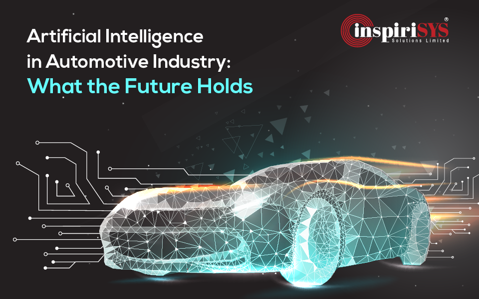

Artificial intelligence (AI) has many applications in healthcare, including:
AI can help detect diseases early, such as breast cancer, and predict their recurrence. AI can also help diagnose eye diseases like diabetic retinopathy.
Artificial intelligence (AI) in finance helps drive insights for data analytics, performance measurement, predictions and forecasting, real-time calculations, customer servicing, intelligent data retrieval, and more. It is a set of technologies that enables financial services organizations to better understand markets and customers, analyze and learn from digital journeys, and engage in a way that mimics human intelligence and interactions at scale.
Artificial intelligence (AI) has many applications in automobiles, including:
AI analyzes data from sensors and other sources to predict when a vehicle or component will fail and schedule maintenance before it breaks down.
